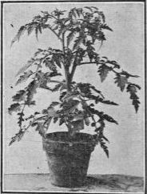

649. Starting Early Tomato Plants
Description
This section is from the book "Vegetable Gardening", by Ralph L. Watts. Also available from Amazon: Vegetable Gardening.
649. Starting Early Tomato Plants
The proper time to sow depends upon: (1) The facilities available for growing the plants; (2) climatic conditions; (3) purpose of the crop; (4) land available; and (5) market conditions. In most instances the tomatoes that ripen first command the highest prices, so that the majority of growers desire to place their product upon the market at the earliest possible date, al. though they may be unwilling tomato plant to provide the equipment or to make the expenditure of time and money necessary to grow really early tomatoes. It is expensive to grow such plants as shown in Figure 106. The cost and the value of the space which they occupy in frames or greenhouses should always be taken into account in determining profits. An increasing number of gardeners, however, find it profitable to grow extremely early tomatoes. The following plans (there are many others so far as details are concerned) are in common use:
Fig. 106. Pot-Grown
1. Sow thinly, 6 to 8 weeks before field planting, in hotbed or greenhouse in rows 3 to 6 inches apart, and set in the field without previous transplanting. This plan should not be recommended, because the plants are usually spindly and the root system poorly developed.
2. Sow 10 to 12 seeds to the inch of furrow, rows 2 inches apart, 7 to 8 weeks before field planting; transplant 1 1/2 or 2 inches apart in 3 or 4 weeks from sowing.
3. Sow as directed in No. 2, about nine weeks before field planting; transplant 1 1/2 or 2 inches apart, preferably in the greenhouse; three weeks later, plant 4 x 4 or 4x5 inches apart in flats or beds, or in 3 to 5-inch paper or earthen pots, or in veneered boxes or berry baskets. This method with any of its modifications should produce fine plants and meet the requirements when the tomatoes are grown on a large field scale.
4. Sow 10 to 11 weeks before field planting, and make at least three shifts in flats, beds or preferably pots, the space or the size of the pots being increased each time until the plants stand 7 to 10 inches apart. When this method is followed, the crown cluster of flowering buds should be removed as soon as it appears. This will cause the axillary buds and branches to develop rapidly and each to produce a cluster of flowers. The plant will thus have two to five flower clusters instead of one when set in the field. There should be a bountiful supply of ripe tomatoes in 40 or 45 days from the date the plants are set in the field. Ripe tomatoes from plants of this character have been picked in 37 days from the time of planting in the open ground. In many northern markets the tomatoes which are picked soon after July 1 will average about 2 cents each.
Tomato plants should always be grown rather slowly, without check in growth at any time. For a maximum production of first early fruits, each plant should bear two or more clusters of flowers when set in the field.
650. Starting Late Plants
In many of the southern districts where tomatoes are grown for the cannery, the seed is sown in the open, and the plants set in the field when they are 6 to 8 inches tall. In northern sections plants are generally started under glass or protecting muslin or canvas and set in the field with or without previous transplanting. There is an increasing tendency, however, to transplant at least once before taking to the open ground. Both practical experience and experiments indicate that relatively early sowing with at least one transplanting increases yields. The truckers and market gardeners of the North often exercise almost as much care in starting the late plants as the early ones.
651. Soil Preparation
Land manured heavily for a cultivated crop the preceding year should be in prime condition for tomatoes. Heavy clover sods are regarded excellent, especially for the late crop. Green manures are employed extensively in some sections preparatory to planting tomatoes. Whatever the previous treatment of the land has been, early spring plowing and frequent and thorough subsequent harrowing are essential to the best results.
Continue to:
Tags
plants, crops, gardening, cultivated, harvesting, food ,greenhouses, fertiliser, vegitables